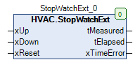

StopWatchExt (FB)¶
FUNCTION_BLOCK StopWatchExt
Kurzbeschreibung¶
Messung von Zeitabschnitten mit Plus-/Minus-Eingang und RücksetzmöglichkeitAnzeige der Gesamtzeit ( tElapsed ) und der Gesamtzeit vor der letzten Messung ( tMeasured ).
Darstellung¶

Schnittstellen¶
Eingänge¶
Name Datentyp Wertebereich Initialwert Funktion xUp BOOL Freigabe der Vergrößerung der Messzeit xDown BOOL Freigabe der Verringerung der Messzeit xReset BOOL Rücksetzung der Stoppuhr
Ausgänge¶
Name Datentyp Wertebereich Initialwert Funktion tMeasured TIME 0 Tage 0 ... 10 Tage Gemessene Zeit vor der letzten Messung tElapsed TIME 0 ... 10 Tage Gemessene Zeitdauer seit der letzten Rücksetzung xTimeError BOOL Anzeige eines Fehlers der Stoppuhr
Funktionsbeschreibung¶
Allgemeines¶
Dieser Funktionsbaustein dient zur Messung von einzelnen Zeitabschnitten.
Der Zählerstand wird vergrößert, falls der Eingang xUp aktiv ist.
Der Zählerstand wird verringert, falls der Eingang xDown aktiv ist.
Der Eingang xUp hat Vorrang vor dem Eingang xDown.
Die Summe der gemessenen Zeitabschnitte wird am Ausgang tElapsed dargestellt.
Die Summe der gemessenen Zeitabschnitte vor der letzten Messung wird am Ausgang tMeasured dargestellt.
Die Summe der gemessenen Zeitabschnitte darf maximal 14400 Minuten ( = 10 Tage ) und minimal 0 Minuten betragen.
Jede ansteigende Flanke am Rücksetzeingang ( xReset = FALSE / TRUE ) setzt unabhängig von den übrigen Zuständen die Ausgänge tElapsed und tMeasured auf FALSE zurück.
Bei nicht freigegebener Messung ( xUp = FALSE und xDown = FALSE ) werden die Ausgänge tElapsed und tMeasured nicht verändert.
Unterschiedliche Reaktion auf eine Flanke am Rücksetzeingang xReset
Eingang xUp = TRUE:
Jede Flanke am Rücksetzeingang setzt die Ausgänge tElapsed und tMeasured auf 0 zurück. Anschließend erhöht sich der Zählerstand sofort wieder kontinuierlich.
Eingang xDown = TRUE:
Jede Flanke am Rücksetzeingang setzt die Ausgänge tElapsed und tMeasured auf 0 zurück.
Der Zählerstand ändert sich nicht.
Die Fehleranzeige xTimeError wird aktiviert, solange der Eingang xDown in diesem Zustand TRUE verbleibt.
Fehleranzeige xTimeError¶
Sie dient zur Anzeige von Funktionsfehlern ( xTimeError = TRUE ).
Zustand xTimeError keine Funktionsstörung FALSE Messzeit größer / gleich 14400 Minuten TRUE Messzeit kleiner 1ms und Eingang xDown = TRUE TRUE
Visualisierung¶
Codesys¶
- InOut:
Scope Name Type Comment Input xUp BOOL Freigabe der Vergrößerung der Messzeit xDown BOOL Freigabe der Verringerung der Messzeit xReset BOOL Rücksetzung der Stoppuhr Output tMeasured TIME Gemessene Zeit vor der letzten Messung tElapsed TIME Gemessene Zeitdauer seit der letzten Rücksetzung xTimeError BOOL Anzeige eines Fehlers der Stoppuhr